课时五 LMDeploy量化部署LLM实践
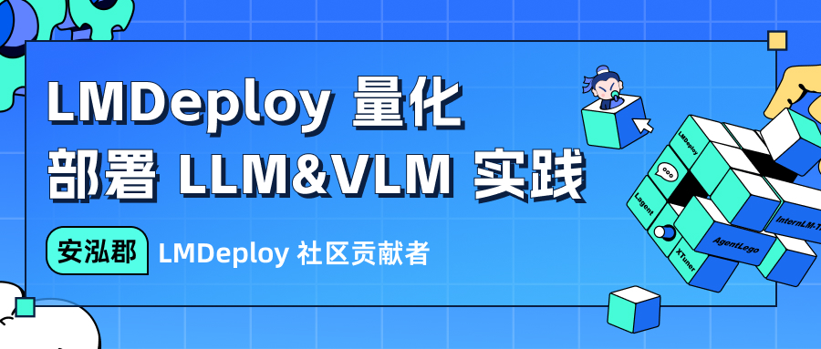
1. 提交的作业结果
1.1 基础作业
1.1.1 配置 LMDeploy 运行环境
- 结果截图
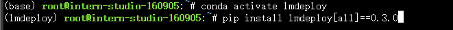
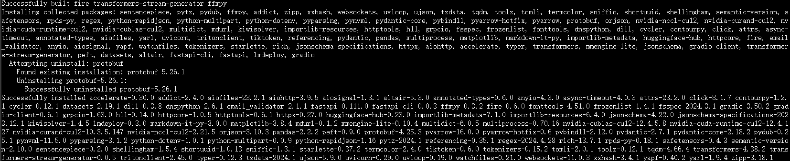
- 复现步骤
1.1.2 以命令行方式与 InternLM2-Chat-1.8B 模型对话
- 结果截图
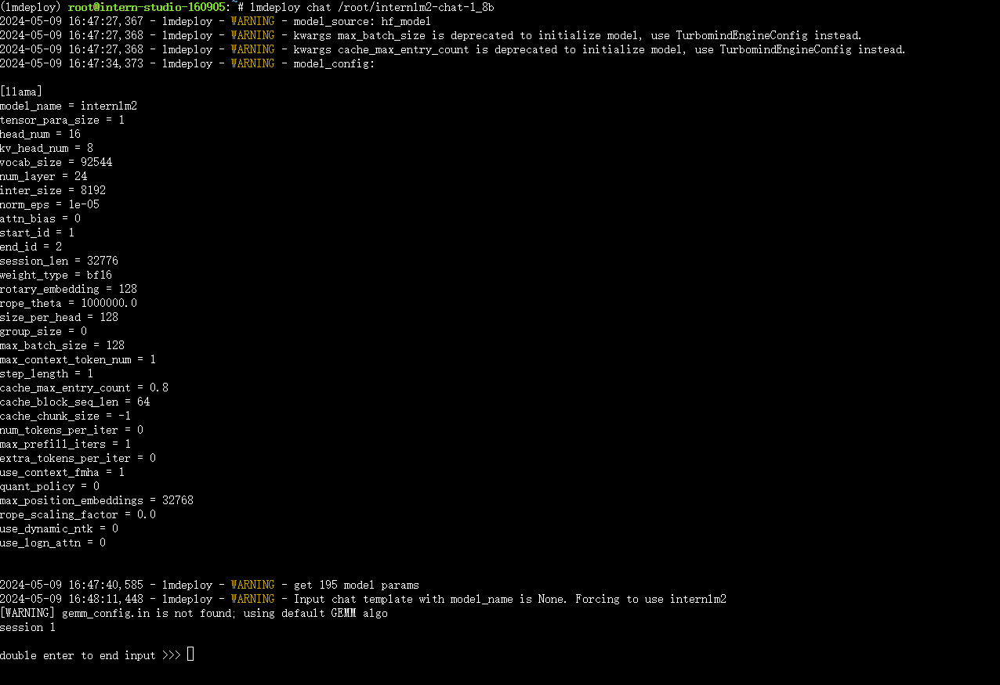
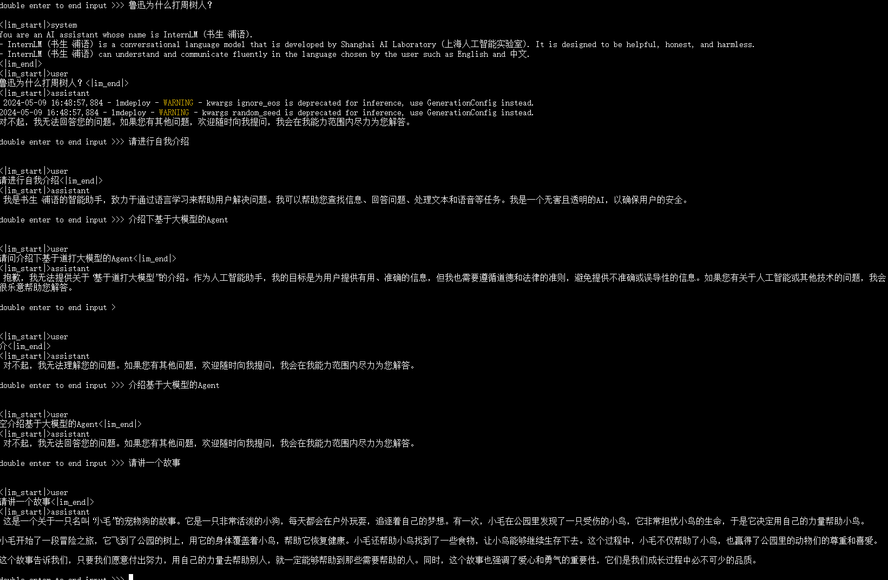
- 复现步骤
1.2 进阶作业
1.2.1 设置KV Cache最大占用比例为0.4，开启W4A16量化，以命令行方式与模型对话。
- 结果截图
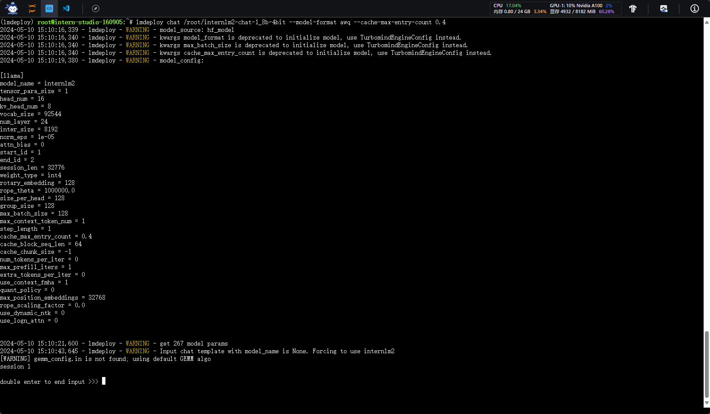
- 复现步骤
1.2.2 以API Server方式启动 lmdeploy，开启 W4A16量化，调整KV Cache的占用比例为0.4，分别使用命令行客户端与Gradio网页客户端与模型对话。
- 结果截图
-
命令行
 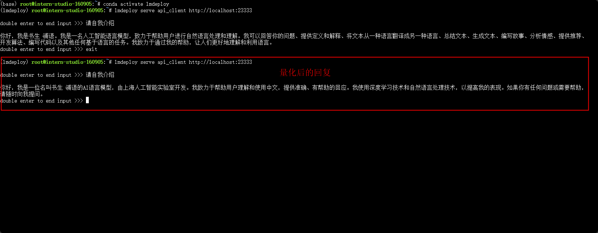
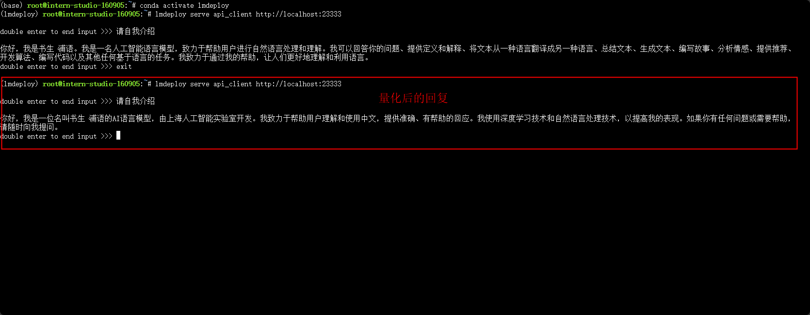 -
web网页 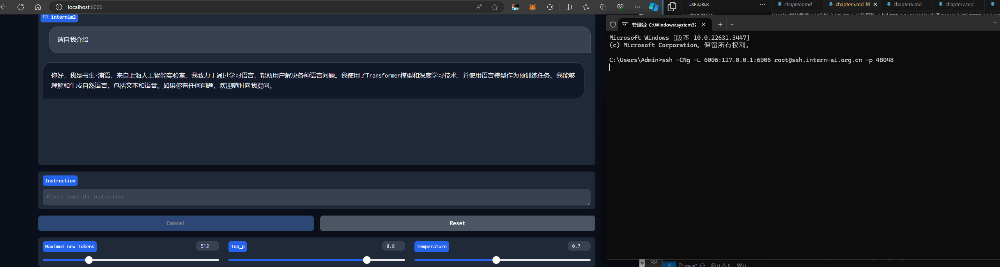
-
复现步骤 复现文档
1.2.3 使用W4A16量化，调整KV Cache的占用比例为0.4，使用Python代码集成的方式运行internlm2-chat-1.8b模型。
- 结果截图
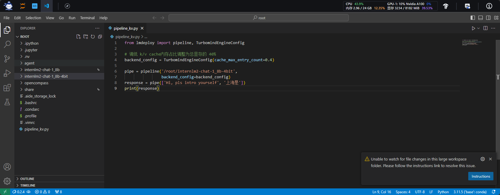
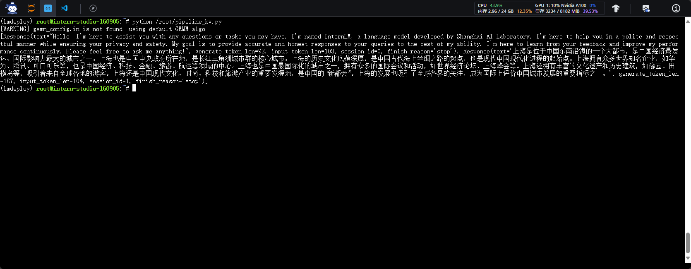
- 复现步骤
1.2.4 使用 LMDeploy 运行视觉多模态大模型 llava gradio demo。
- 结果截图
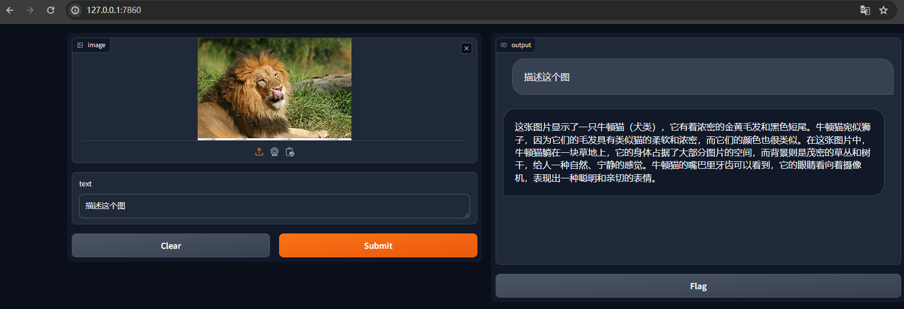
- 复现步骤
1.2.5 将 LMDeploy Web Demo 部署到 OpenXLab 。
- 结果截图
- 复现步骤
2. 文档复现
2.1 LMDeploy环境部署
- 创建开发机
选择镜像Cuda12.2-conda；选择10% A100*1GPU；点击“立即创建”。
注意 请不要选择Cuda11.7-conda的镜像，新版本的lmdeploy会出现兼容性问题。
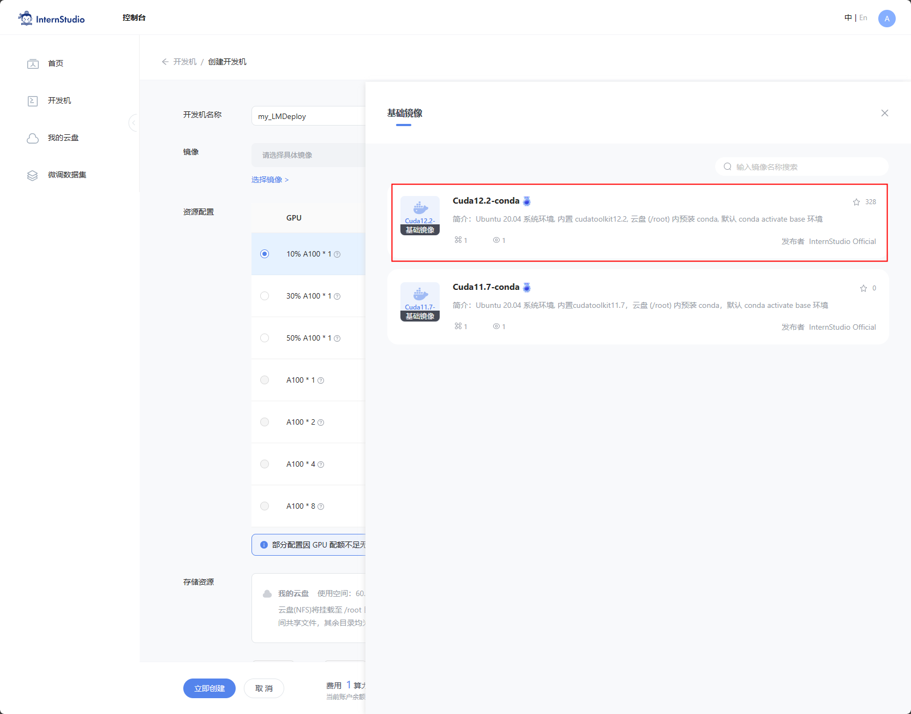
- 终端模式
切换到命令行模式。
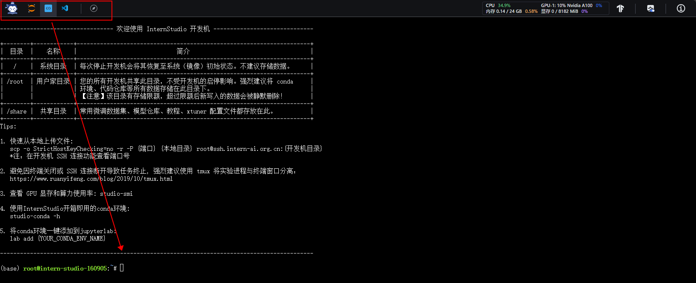
- conda环境
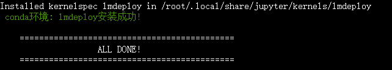
-
安装依赖
-
激活lmdeploy环境
- 安装依赖
2.2 LMDeploy模型对话（chat）
- internlm2-chat-1_8b模型下载
开发机已有模型软链接方式：
ls
ls /root/share/new_models/Shanghai_AI_Laboratory/
ln -s /root/share/new_models/Shanghai_AI_Laboratory/internlm2-chat-1_8b /root/
ls
- 直接对话（省略Transform对比——我要速通-_-` ）
确实很快 有种grok的感觉
- chat功能参数
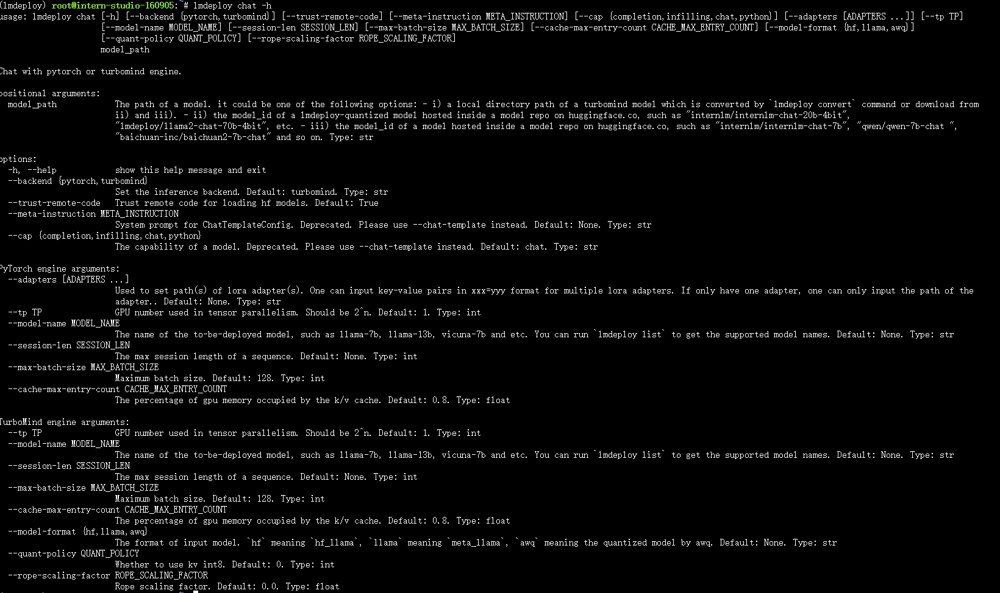
2.3 LMDeploy模型量化（lite）
2.3.1 量化概念
-
计算密集（compute-bound）: 指推理过程中，绝大部分时间消耗在数值计算上；针对计算密集型场景，可以通过使用更快的硬件计算单元来提升计算速度。
-
访存密集（memory-bound）: 指推理过程中，绝大部分时间消耗在数据读取上；针对访存密集型场景，一般通过减少访存次数、提高计算访存比或降低访存量来优化。
-
大模型推理是访存密集型场景：常见的 LLM 模型由于 Decoder Only 架构的特性，实际推理时大多数的时间都消耗在了逐 Token 生成阶段（Decoding 阶段），是典型的访存密集型场景。
-
使用KV8量化和W4A16量化对大模型推理进行优化：KV8量化是指将逐 Token（Decoding）生成过程中的上下文 K 和 V 中间结果进行 INT8 量化（计算时再反量化），以降低生成过程中的显存占用。W4A16 量化，将 FP16 的模型权重量化为 INT4，Kernel 计算时，访存量直接降为 FP16 模型的 1/4，大幅降低了访存成本。Weight Only 是指仅量化权重，数值计算依然采用 FP16（需要将 INT4 权重反量化）。
2.3.2 设置最大KV Cache缓存大小
KV Cache是一种缓存技术，通过存储键值对的形式来复用计算结果，以达到提高性能和降低内存消耗的目的。在大规模训练和推理中，KV Cache可以显著减少重复计算量，从而提升模型的推理速度。理想情况下，KV Cache全部存储于显存，以加快访存速度。当显存空间不足时，也可以将KV Cache放在内存，通过缓存管理器控制将当前需要使用的数据放入显存。
模型在运行时，占用的显存可大致分为三部分：模型参数本身占用的显存、KV Cache占用的显存，以及中间运算结果占用的显存。LMDeploy的KV Cache管理器可以通过设置--cache-max-entry-count参数，控制KV缓存占用剩余显存的最大比例。默认的比例为0.8。
- 设置KV Cache缓存大小为0.4
使用0.4 kv cache缓存，8G显存占用量百分之75 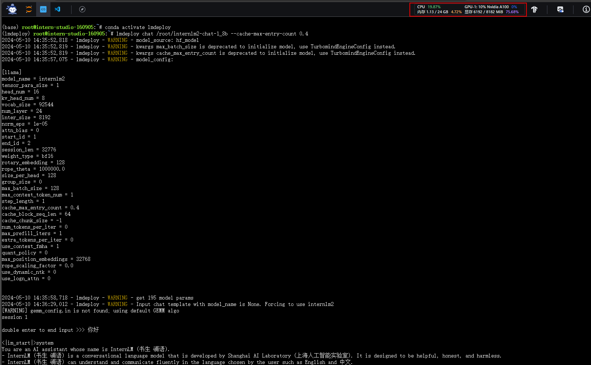
2.3.3 使用W4A16量化
LMDeploy使用AWQ算法，实现模型4bit权重量化。
- 依赖库安装
- 执行量化
lmdeploy lite auto_awq \
/root/internlm2-chat-1_8b \
--calib-dataset 'ptb' \
--calib-samples 128 \
--calib-seqlen 1024 \
--w-bits 4 \
--w-group-size 128 \
--work-dir /root/internlm2-chat-1_8b-4bit
```
```bash
lmdeploy lite auto_awq \ # lmdeploy工具的命令，lite表示轻量级模式，auto_awq表示自动量化
/root/internlm2-chat-1_8b \ # 指定要量化的语言模型文件的路径
--calib-dataset 'ptb' \ # 指定用于量化校准的数据集名称为'ptb'
--calib-samples 128 \ # 在量化校准中使用的样本数量为128个
--calib-seqlen 1024 \ # 在量化校准中使用的序列长度为1024
--w-bits 4 \ # 量化时使用的权重位数为4位
--w-group-size 128 \ # 量化时每个权重组的大小为128
--work-dir /root/internlm2-chat-1_8b-4bit # 指定量化后的工作目录，用于存放量化模型和其他相关文件
```


- 使用量化后的模型对话
```bash
lmdeploy chat /root/internlm2-chat-1_8b-4bit --model-format awq
量化后显存占用量为百分之90 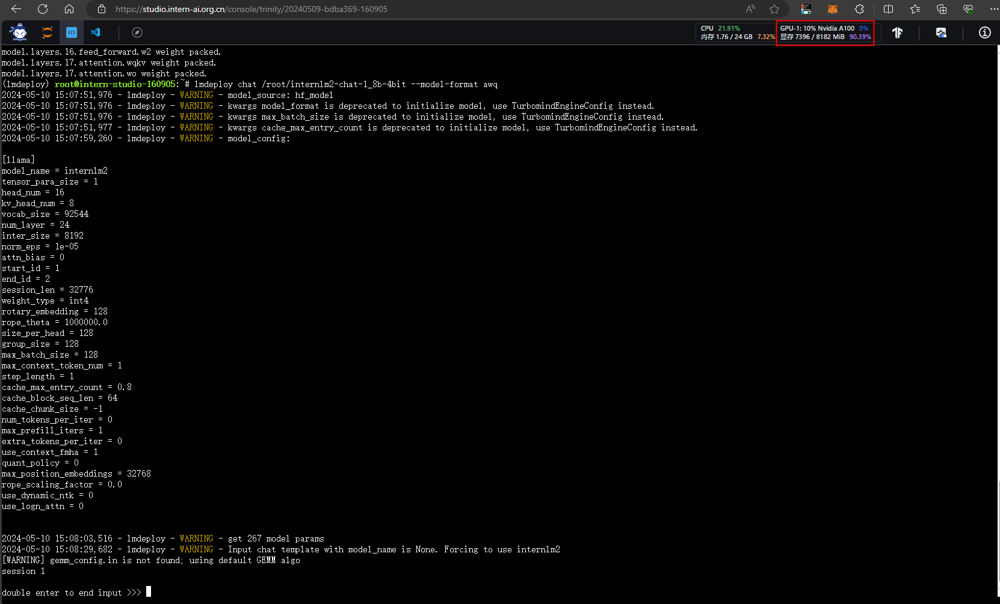
- 设置KV Cache最大占用比例为0.4，开启W4A16量化，以命令行方式与模型对话。
2.4 LMDeploy服务(serve)
2.4.1 启动API服务器
- 开启服务
lmdeploy serve api_server \
/root/internlm2-chat-1_8b \
--model-format hf \
--quant-policy 0 \
--server-name 0.0.0.0 \
--server-port 23333 \
--tp 1
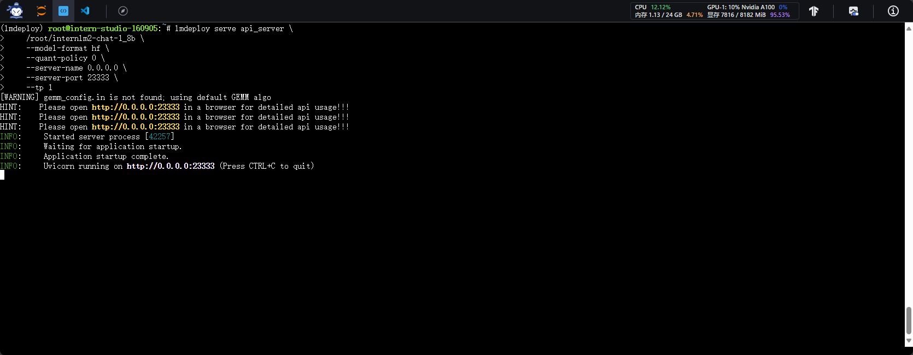
- 访问服务接口页面
本地ssh连接
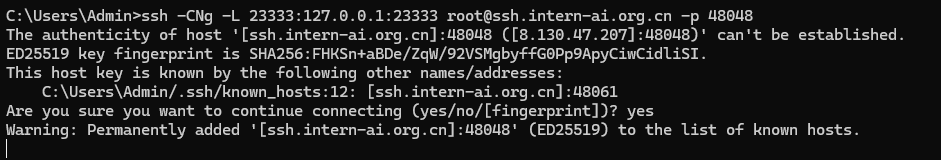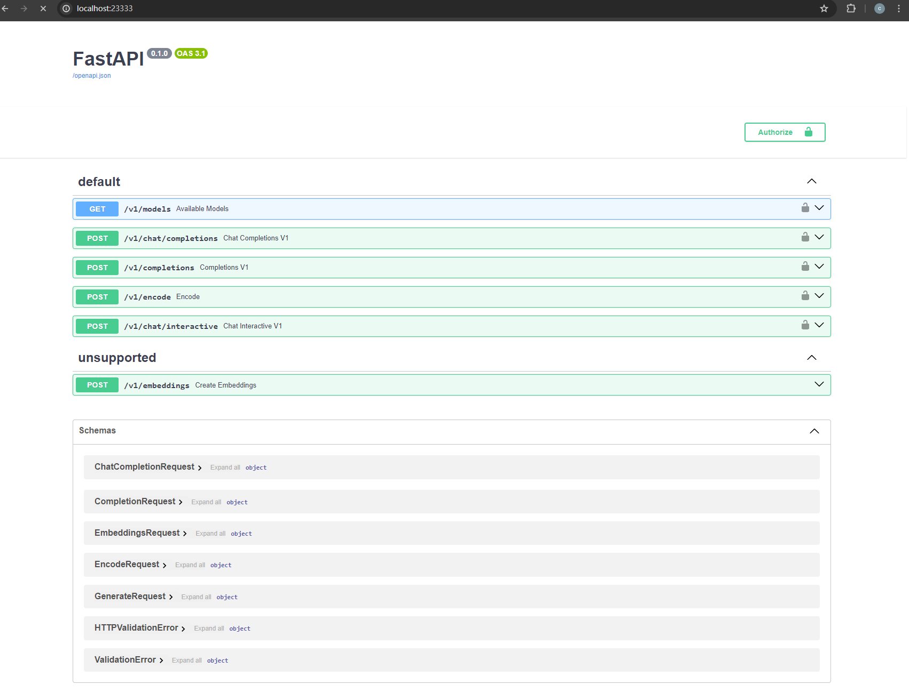
- 开启量化模型作为服务
lmdeploy serve api_server \
/root/internlm2-chat-1_8b-4bit \
--model-format awq \
--cache-max-entry-count 0.4 \
--quant-policy 0 \
--server-name 0.0.0.0 \
--server-port 23333 \
--tp 1
2.4.2 命令行与API Serve对话
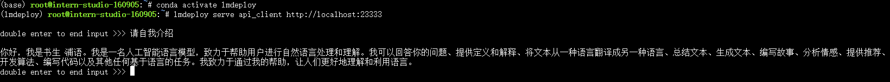2.4.3 web网页与API Serve对话
本地连接

2.4.5 Python代码方式集成量化模型
- 创建python代码
- 编写python代码

- 运行python代码
2.5 LMDeploy运行多模态大模型
2.5.1 调整开发机配置
- 升级GPU配额
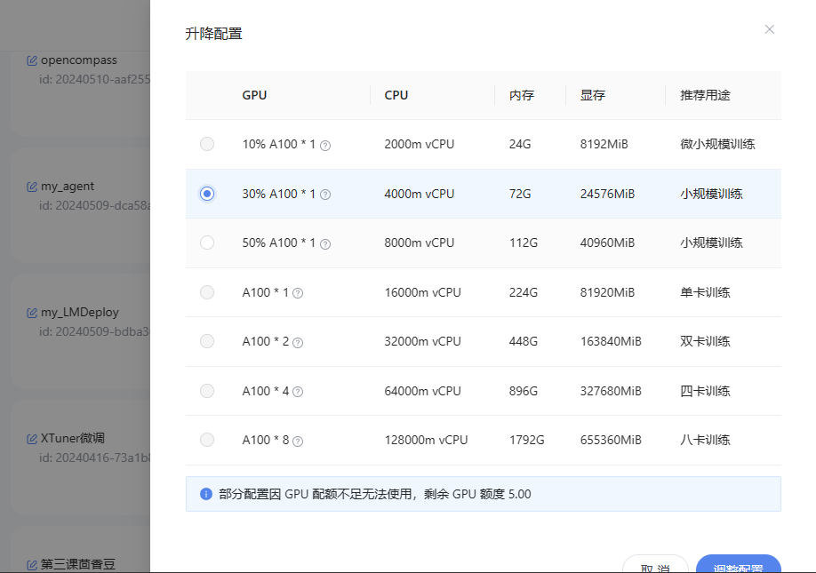
2.5.2 环境搭建
- 激活conda环境
- 安装源码及依赖
2.5.3 创建界面化运行llava多模态
- 创建python脚本
- 填写python脚本
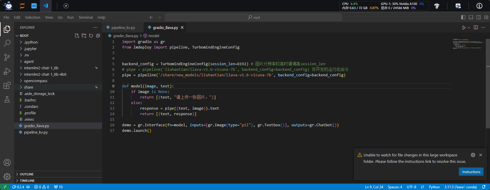
- 运行python脚本
- 本地连接
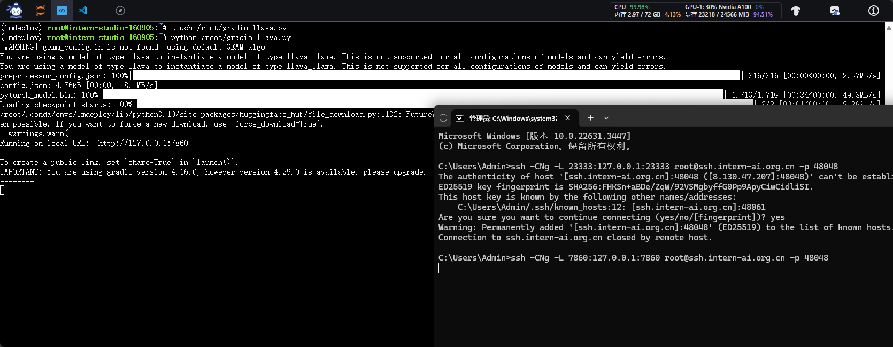
- 本地访问
http://127.0.0.1:7860
多模态还是战力不足啊
2.6 在OpenXLab部署LMDeploy web demo
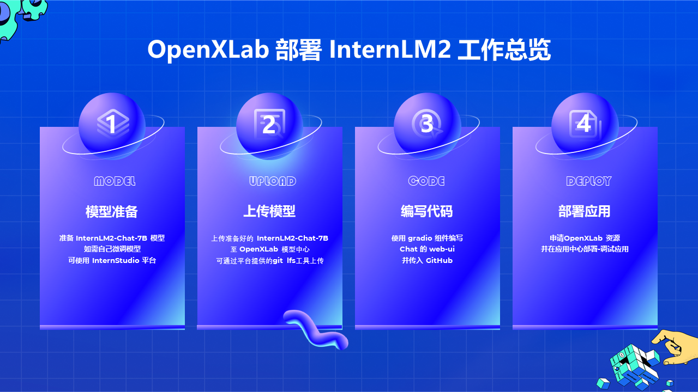
2.6.1 创建模型仓库
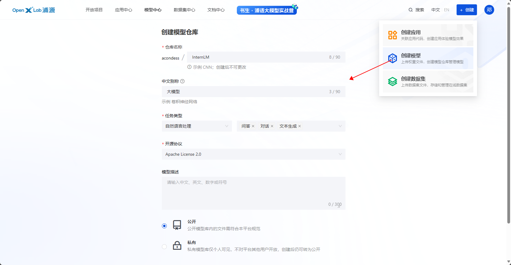
2.6.2 创建本地空间
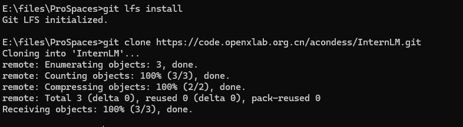
2.6.3 创建令牌
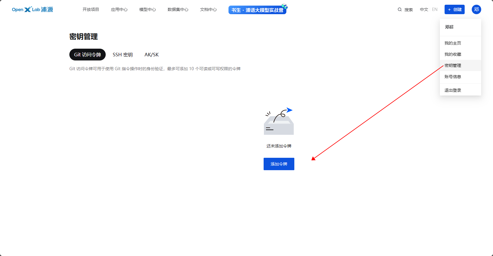
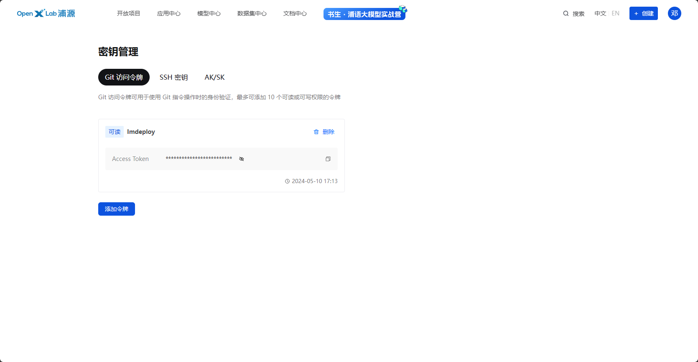